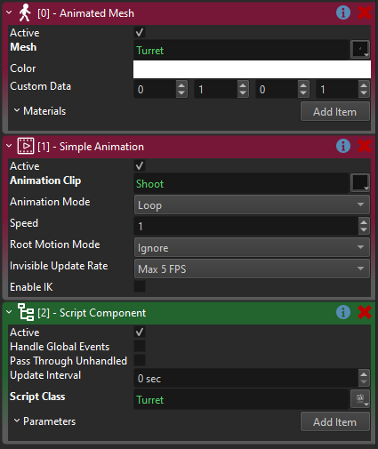
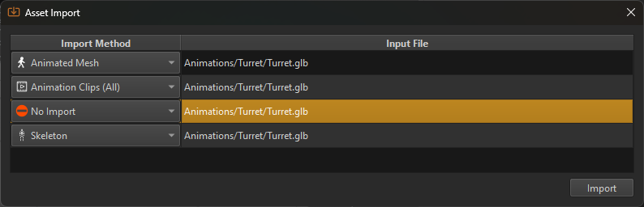

Skeletal Animations
Skeletal animations are used to animated meshes. This is typically used for game characters and robots, but is equally useful for other complex moving objects.
Describing how skeletal animation works in general is out of scope for the EZ documentation, but there are a vast amount of resources about this topic online. It is assumed here, that you are familiar with the concepts and know the basics about modelling, rigging and animating a mesh with a tool such as Blender.
The rest of this document gives a high-level overview, how to get started with getting animated meshes into EZ. For more in-depth descriptions of each feature, please consult the respective documentation pages.
Sample Scene
For a sample scene to look at, open the Animation scene from the Testing Chambers project.
The Animation System Pieces
The following elements are involved to make an animated mesh:
Animated Mesh Asset
The animated mesh asset represents the mesh of the animated object. This is a special version of the mesh asset. It works mostly the same way, except that it adds the necessary skinning information. Consequently, only these kinds of meshes can be used for skeletal animation. An animated mesh asset requires you to specify a default skeleton asset, otherwise it won't even transform the data.
Skeleton Asset
The skeleton asset stores the bone hierarchy of the animated object. This is also where you configure the overall scaling and which direction should be the forward, right and up vector of the imported model. The skeleton asset is also where you would set up physics collision shapes.
Animation Clip Asset
The animation clip asset represents a single animation, such as a walk or a jump animation. You may have multiple animations stored in a single .fbx or .glb file, but you need to create one animation clip asset for each animation that you want to import into EZ. Just reference the same source file each time. The animation clip asset has a property UseAnimationClip through which you can choose which animation to extract from the source file. Currently you have to type the name of the animation. The Available Clips list just below it shows you which animations have been found in the file.
Additionally, in case all animations are in one large clip, you can use the FirstFrame and NumFrames properties to extract only a subset of the animation. This allows you to import the same source file many times, each time extracting only a specific range as a single clip.
The root motion properties are meant for enabling an animation clip to move an animated character (ie. the actual character controller that sits on top of the animated mesh).
The event track property allows you to add markers to the clip, that indicate what happens at what time in the clip. This can be used to indicate when a foot touches the ground, or at what point in the animation a weapon fires. Using this information, the game logic could react by, for example, spawning an effect.
Animation events are sent as event messages and therefore can only be captured by event handler components such as visual scripts or TypeScript components.
Simple Animation Playback
Once you have an animated mesh asset, a skeleton asset and an animation clip asset all set up, you can create an animated object in a scene by attaching an animated mesh component and a simple animation component to a game object like so:

Here we have also attached a visual script to react to events in the animation clip, but that is entirely optional. When you press play, the editor will play back the animation on the mesh.
Advanced Animation Playback
To create a playable character, you need multiple animations for all the actions that the character should be able to do. A big part revolves around locomotion, ie making the character walk around. Here it is not sufficient anymore to just play one animation, you will need to have multiple animations and blend them together in a convincing way.
This is where the animation controller comes into play. This asset allows you to define how animations should be combined to make a character move fluidly and react to various inputs.
Once you have basic animation playback working, getting familiar with animation controllers is the next step to make the most out of your animated characters.
How to Import Animation Data
To import an animated object, you need to set up multiple assets (the mesh, the skeleton, the animation clips). The easiest way is to press CTRL+I to open the asset import dialog. Select your .fbx or .glb file and choose to import it as multiple asset types like so:

This will create all three necessary assets. You can repeat this process, if you want to import multiple animation clips (select No Import for the other asset types then). You'll need to change the filename for each additional animation clip asset.
Animation Utility Components
The following components are currently available:
Joint Attachment Component
If you put a child object under an object with an animated mesh component, and attach a joint attachment component, the animation system will take control over that object's position. With the JointName property you specify a bone that you are interested in (see the skeleton asset, if you need to know what bones are available). Every game tick, the animation system will then move that game object to the position of the animated bone. This allows you to have game objects move in sync with the animation. This can be used to put an object into the hand of a creature, or to have an effect follow the animation.
In the sample scene this is used to place an object at the (animated) front of the turret's barrel, such that the projectile will be spawned at the proper position.
Joint Override Component
The joint override component is the opposite to the joint attachment component. It works similar in that it has to be attached to a child object of an animated mesh and you have to type in the name of a bone. However, it will then override the specified bone's local transform with its own local transform. The idea here is, that game code can use this game object as a controller to steer the animated object. So for example your turret might be one complex animated object, with many bones but somewhere in the bone hierarchy there is one bone that controls the turrets aim (up/down or left/right or both). You want cool animations to "unfold" the turret when it is built and all sorts of other animations that are only possible with proper skeletal animation, but once the game runs you also want to procedurally control where the turret is aiming. Using this component you can take control of certain bones and drive their animation yourself.
In the sample scene there are two objects for each turret that override two bones: one for left/right rotation and one for pointing up/down. You can manually modify these values from the property grid, while the editor is in play mode, to control the turrets aim. Note how the recoil animation continues to play properly relative to the turret's main direction.
Future Work
Work on the animation system is ongoing. For a list of planned features, have a look here.